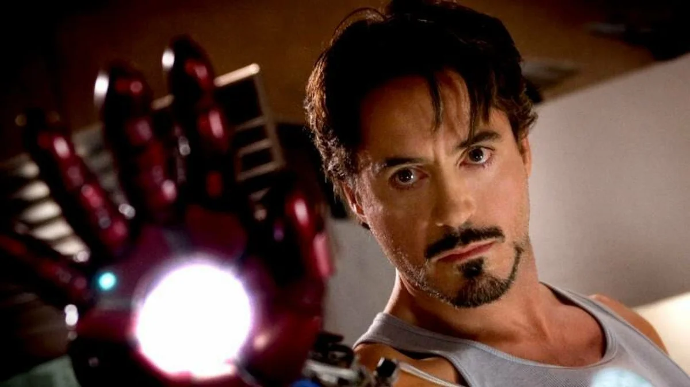

Тони Старк (Железный человек)
Описание
«Наверное, я достиг такого момента в своей жизни, когда я задаюсь вопросом:
что было бы, если бы все миллиардеры и люди из правительства попытались спасти
мир вместо того, чтобы опустошать его?» (Тони Старк.)
Старк не тратит оставшееся время зря. Вооружившись броней Железного человека,
он начинает бороться с силами зла. Самый известный подвиг Тони — спасение
президента США от покушения. После этого Старк раскрывает себя всему миру
и патентует технологию «Железный человек», чтобы она не попала в руки злодеев.
В перерывах между сражениями Тони тусуется в барах и развлекается с девушками.
Первое появление
"Железный человек" 2008 год.
Занятие
Супергерой. Директор компании.
Настоящее имя
Энтони Эдвард Старк.
Локация
Земля.
Вселенная Земля-616
Галерея
